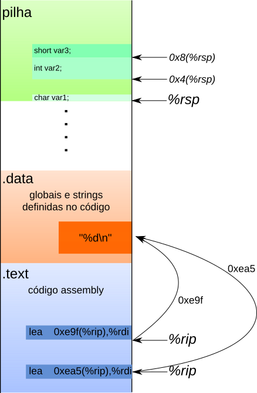

08 - Variáveis locais¶
Como visto na expositiva, variáveis locais são armazenadas na pilha. O topo da pilha é armazenado em %rsp e ela cresce para baixo, ou seja, ao empilhar um dado o valor de %rsp diminui e ao desempilhar seu valor aumenta. O compilador faz todo o possível para usar somente os registradores, porém em alguns casos é necessário guardar a variável na memória. Isso ocorre, em geral, quando usamos & para computar o endereço de uma variável. O exemplo mais comum nos códigos que já escrevemos é na leitura de valores usando scanf.
Exemplo guiado¶
Funções que guardam variáveis na pilha seguem um padrão facilmente identificável. Primeiro elas subtraem um valor da pilha (0x10 no exemplo abaixo) correspondente ao tamanho total de todas as variáveis usadas. Depois temos várias instruções usando endereços relativos a %rsp e por fim devolvemos o espaço usado somando 0x10 de volta a %rsp.
sub $0x10, %rsp
. . . // código da função aqui!
movl 0x8(%rsp),%eax
mov %eax,%edx
addl 0xc(%rsp),%edx
. . . // função continua
add $0x10, %rsp
ret
No exemplo acima, temos duas variáveis locais: 0x8(%rsp) e 0xc(rsp). Cada uma é identificada no código Assembly pelo endereço em que está posicionada na pilha. Logo, todo deslocamento em relação a %rsp indica um acesso a variável local, sendo que pode ser um acesso de leitura e escrita (usando MOV, por exemplo) ou da operação endereço de & (usando LEA).
Conseguimos identificar que seus tamanhos são int por duas razões:
- elas aparecem em instruções junto com registradores de 4 bytes (
%eaxe%edx) - as instruções
movleaddltem o sufixol, que indica que os dados tratados tem tamanho 4 bytes. Os sufixos suportados são:b- 1 bytew- 2 bytesl- 4 bytesq- 8 bytes
Qualquer razão acima é suficiente para identificar os tipos das variáveis locais.
Importante
Novamente, nem toda instrução em Assembly pode ser representada em C. As instruções sub 0x10, %rsp e add 0x10, %rsp representam a criação de variáveis locais na pilha e não tem equivalente em C. Simplesmente ignoramos elas e usamos as variáveis locais no código.
Revisão de variáveis globais e strings constantes¶
Antes de iniciar o próximo exercício vamos revisar como variáveis locais, globais e strings constantes são acessadas em código assembly. A imagem abaixo exemplifica os três casos:

- Variáveis locais: são acessadas com
lea(para&- endereço de) oumov(para leituras e escritas) relativos a%rsp - Globais e strings constantes: são acessadas usando a notação
0xYY(%rip), sendo que o valor0xYYmuda a cada acesso. No caso das strings, o acesso a estes endereços é somente leitura.
O endereçamento relativo a %rip leva em conta a posição relativa entre a instrução atual e o endereço de memória do dado. Na imagem acima estão destacadas duas instruções lea que acessam o mesmo dado. Como o %rip (ponteiro para a próxima instrução) é diferente precisamos de deslocamentos diferentes para acessar o mesmo dado.
Dica: o gdb coloca o endereço calculado ao lado das instruções deste tipo.
Question
É possível que o lea abaixo seja aritmético? Por que?
lea 0x8(%rsp),%rdx
Resposta
Não! O registrador %rsp é especial e sempre guarda o endereço do topo da pilha de chamadas. Nesse espaço de memória guardamos todas variáveis que não podem ser alocadas em um registrador.
Arquivo ex2¶
O código abaixo (ex2) utiliza variáveis locais.
Dump of assembler code for function func1:
0x05fe <+0>: sub $0x10,%rsp
0x0602 <+4>: movl $0xa,0xc(%rsp)
0x060a <+12>: movl $0xb,0x8(%rsp)
0x0612 <+20>: lea 0xc(%rsp),%rdi
0x0617 <+25>: callq 0x5fa <func2>
0x061c <+30>: addl $0x1,0x8(%rsp)
0x0621 <+35>: lea 0x8(%rsp),%rdi
0x0626 <+40>: callq 0x5fa <func2>
0x062b <+45>: add $0x10,%rsp
0x062f <+49>: retq
Vamos começar analisando as três primeiras linhas do programa.
Question
Quanto espaço (em bytes) é reservado na pilha?
- 10
- 16
- 20
- 8
Resposta
Ao executar sub $0x10,%rsp criamos um espaço de 16 bytes (0x10) na pilha. Note que as constantes sempre aparecem em hexadecimal.
Existem vários momentos no código que lemos/escrevemos em endereços relativos a %rsp. Cada deslocamento representa uma variável local que está armazenada na memória.
Question
Quantas variáveis são inicializadas e quais seus tamanhos?
- 2 -
int - 2 -
long - 1 -
int - 1 -
long
Resposta
São duas variáveis int: uma em 0xc(%rsp) e outra em 0x8(%rsp).
Question
Identifique onde as variáveis locais encontradas são usadas. Dê um nome para cada uma delas.
Question
Os lea das linhas +20 e +35 podem ser aritméticos?
- SIM
- NÃO
Resposta
Não são aritméticos, portanto representam a operação endereço de &.
Question
Com base em sua resposta acima, traduza as chamadas de função que ocorrem nas linhas +25 e +40.
Question
Traduza o programa acima para C
Arquivo ex3¶
No exercício anterior vimos como passar variáveis por referência para outras funções. Agora veremos como trabalhar com scanf. Veja abaixo a função main do executável ex3. Abra este arquivo usando o gdb e siga os exercícios.
Dump of assembler code for function main:
0x1149 <+0>: sub $0x18,%rsp
0x114d <+4>: lea 0xc(%rsp),%rsi
0x1152 <+9>: lea 0xeab(%rip),%rdi # 0x2004
0x1159 <+16>: mov $0x0,%eax
0x115e <+21>: callq 0x1040 <__isoc99_scanf@plt>
0x1163 <+26>: cmpl $0x0,0xc(%rsp)
0x1168 <+31>: js 0x1180 <main+55>
0x116a <+33>: lea 0xe9f(%rip),%rdi # 0x2010
0x1171 <+40>: callq 0x1030 <puts@plt>
0x1176 <+45>: mov $0x0,%eax
0x117b <+50>: add $0x18,%rsp
0x117f <+54>: retq
0x1180 <+55>: lea 0xe80(%rip),%rdi # 0x2007
0x1187 <+62>: callq 0x1030 <puts@plt>
0x118c <+67>: jmp 0x1176 <main+45>
Question
Vamos começar procurando por variáveis locais que estejam na pilha. Quanto espaço é reservado para elas? Liste abaixo as que você encontrou e dê um nome para cada uma.
Dica: todo acesso relativo a %rsp representa um acesso a variável local.
Question
A instrução call em main+21 é um scanf. O primeiro argumento é a string de formatação. Use o comando x do gdb para encontrar ela na memória.
Dica: usamos este comando nas aulas 02 e 03.
Resposta
A string é "%d".
Question
O segundo argumento do scanf é o endereço da variável a ser preenchida. O endereço de qual variável local é passado?
Resposta
É o endereço da variável correspondente a 0xc(%rsp)
Question
Reconstrua a chamada do scanf acima.
Resposta
int a; // demos esse nome para todas ocorrências de 0x(%rsp)
scanf("%d", &a);
Com a chamada do scanf pronta, vamos analisar o restante do código.
Question
Agora examinaremos as chamadas em main+40 e main+62. Elas são para a função puts. Veja sua documentação (procure por C puts.) e explique abaixo o quê ela faz e quais são seus argumentos.
Question
Com base na explicação acima, escreva abaixo os argumentos passados para cada chamada.
Resposta
São feitas duas chamadas: a primeira é puts("Positivo") e a segunda é puts("Negativo").
Question
Traduza o código acima para um versão em C.
Entrega¶
Exercícios 4 e 5 disponíveis no repositório de atividades.